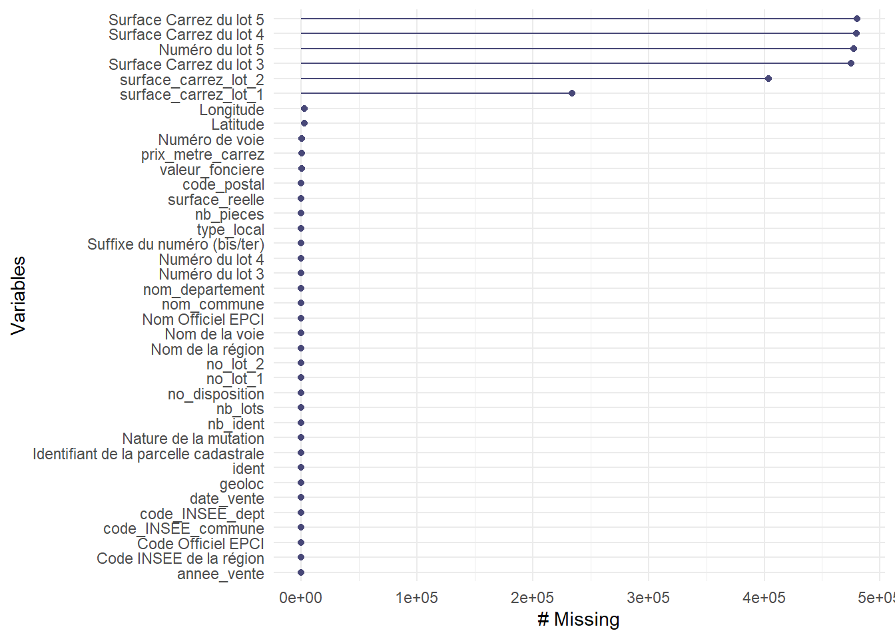
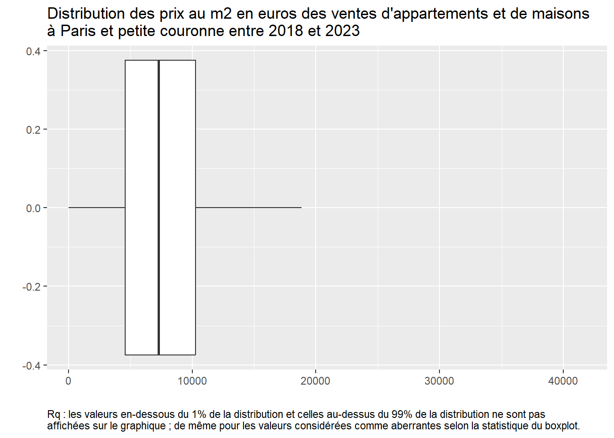
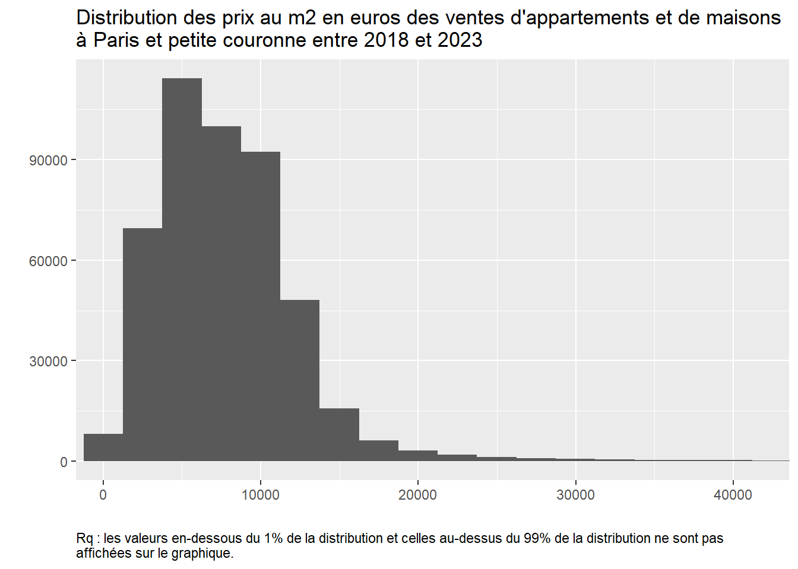
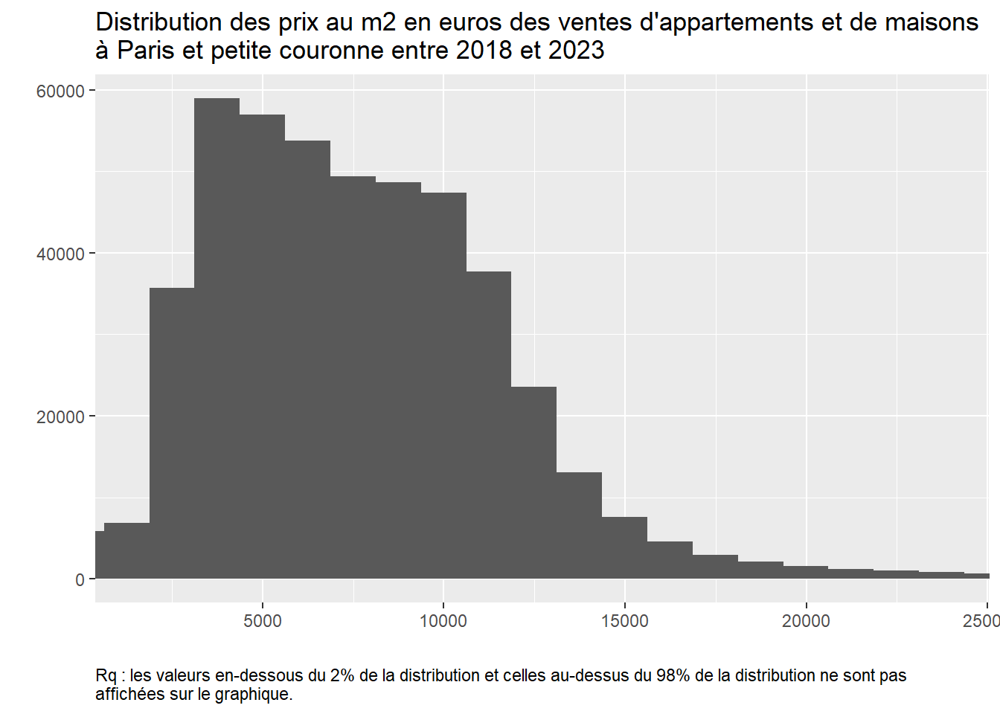

Dans la manipulation des variables, l’une des premières choses à réaliser est de les définir dans le bon format, variables quantitatives/continues ou variables qualitatives/catégorielles.
On l’a vu dans la section précédente, certaines variables sont encore codées comme des nombres entiers (“integer”) alors que ce sont des variables catégorielles. On va donc corriger cela en regardant d’abord quelles variables sont concernées, en les sélectionnant avec select_if() ou select(where()) :
A part les variables d’âge AGED et AGEREV, de date de naissance ANAI et de pondération IPONDI, toutes les autres variables devraient en format “factor”. Deux façons de les transformer, soit vous changer les variables une à une en utilisant les fonctions mutate() et as.factor() ; soit vous créer une liste avec le nom des variables dont le format doit être transformer et vous utilisez la fonction lapply() en l’appliquant à cette liste de variables :
On peut ensuite vérifier que ces variables sont bien des variables facteurs en regardant combien de modalités elles ont et quelles sont-elles. Par exemple, pour la variable CATPC :
nlevels(RP_final$CATPC)
[1] 3
levels(RP_final$CATPC)
[1] "0" "1" "2"
Si nous n’avions pas mis l’option transformant les variables caractères en variables facteurs lors du chargement des données, nous pourrions le faire maintenant en utilisant la fonction mutate_if ou la combinaison de mutate et across(where()) comme ceci RP %>% mutate_if(is.character, as.factor) ou RP %>% mutate(across(.cols = where(is.character), .fns = as.factor)).
On peut enfin vérifier quelles sont les variables numériques qui restent :
Plus généralement, il est souvent d’usage d’utiliser la fonction summary() pour donner un aperçu de l’ensemble des variables, soit de leur distribution pour les variables quantitatives, soit de leur répartition par modalités pour les variables qualitatives ; la fonction permet également de nous donner l’information sur l’existence et le nombre de valeurs manquantes pour chaque variable.
Mais attention, le problème ici est que cela nous donne des fréquences non pondérées pour l’ensemble de nos variables qualitatives, donc qui n’ont finalement pas grand sens.
3.1 Manipulation des variables qualitatives
On peut d’abord travailler sur les variables qualitatives qui correspondent ici à l’essentiel de nos variables.
Comme on le sait, on peut regarder les différents niveaux pour chacune d’entre elles, avec la fonction levels(). Si on veut appliquer la fonction à l’ensemble de nos variables facteurs sans avoir donc à les indiquer une par une, on peut avoir recours à la fonction sapply() qui permet d’appliquer la fonction indiquée entre parenthèses (ici levels()) à tous les éléments de notre table de données.
# Pour info, ici cela s'écrirait : RP_final %>%select(where(is.factor)) %>%sapply(levels)# on peut même se passer de la sélection sur les variables :# RP_final %>% sapply(levels)
On peut ensuite vouloir retravailler les modalités de ces variables, car par exemple les modalités ne sont pas parlantes puisque nommées par des codes chiffres, ou parce que les modalités sont trop nombreuses et qu’on souhaiterait les rassembler pour une analyse ultérieure.
Par exemple, si l’on veut étudier la répartition de la population francilienne selon leur statut d’activité, on peut utiliser la variable TACT:
levels(RP_final$TACT)
[1] "11" "12" "21" "22" "23" "24" "25"
Mais le moins qu’on puisse dire c’est que les 7 modalités de cette variable ne sont pas parlantes, on peut donc recoder les modalités de cette variable dans une étape préalable DATA comme ici ; on pourra bien sûr enchaîner plus tard les lignes de codes et réaliser cette étape dans une même procédure avec le tableau ou le graphique représentant cette variable. Commençons ici par l’étape DATA :
# On cherche à quoi correspondent les modalités chiffrées de cette variable# dans le fichier "meta"meta %>%filter(COD_VAR=="TACT") %>%select(COD_MOD, LIB_MOD) %>%gt()
COD_MOD
LIB_MOD
11
Actifs ayant un emploi, y compris sous apprentissage ou en stage rémunéré.
12
Chômeurs
21
Retraités ou préretraités
22
Élèves, étudiants, stagiaires non rémunéré de 14 ans ou plus
23
Moins de 14 ans
24
Femmes ou hommes au foyer
25
Autres inactifs
# On recode à partir de ces libellés, tout en regroupant certaines modalités# qui sont très spécifiques et nous intéressent moins :RP_final <- RP_final %>%mutate(TACT_moda =as.factor(case_when(TACT =="11"~"Actifs en emploi", TACT =="12"~"Chômeurs", TACT =="21"~"Retraités", TACT %in%c("22","23","24","25") ~"Autres inactifs")))levels(RP_final$TACT_moda)
[1] "Actifs en emploi" "Autres inactifs" "Chômeurs" "Retraités"
Si l’on veut changer l’ordre des modalités, qui s’afficheront comme ci-dessus dans un tableau ou un graphique, on peut utiliser la fonction fct_relevel() du package forcats (à installer avant puis à appeler avant de l’utiliser) :
[1] "Actifs en emploi" "Chômeurs" "Retraités" "Autres inactifs"
Plus largement, pour travailler sur des variables qualitatives en particulier lorsqu’elles sont en format facteur, le package forcats est très utile. Outre une fonction de transformation d’une variable caractère en facteur (as_factor() proche de la version de baseR as.factor() utilisée en début de section), elle contient plein d’autres fonctions : fct_collapse() utilisée pour renommer ou regrouper des modalités d’une variable (au lieu de la double fonction as.factor() et case_when()) ; fct_relevel() utilisée également au-dessus pour trier les modalités comme on le souhaite ; fct_drop() pour enlever des niveaux de facteurs vides/sans effectifs ; fct_explicit_na() pour rendre les NA explicites en créant une modalité “(missing)” ; fct_reorder() et fct_reorder2() pour réordonner les modalités d’une variable, très utile pour les graphiques car utilisables directement dans ggplot() ; fct_lump() pour regrouper les modalités les plus communes (ou au contraire les moins communes) en lui indiquant entre parenthèses le nombre n= de modalités souhaitées ou la proportion minimum souhaitée prop=, et en sélectionnant la variable avec la fonction pull() avant car elle doit être en format vecteur et non data.frame ; ou encore fct_recode() pour changer le niveau des facteurs ; fct_other() ; fct_infreq() et fct_inorder() ; etc. Un bon récapitulatif de ces fonctions est présenté ici.
3.2 Manipulation des variables quantitatives
Comme nous l’avons vu plus haut, il y a peu de variables quantitatives dans cette base et l’une d’entre elles est la pondération, donc on va regarder plus précisément la variable AGED. Cependant, celle-ci aussi est particulière car c’est une variable numérique constituée d’entiers naturels (et non de valeurs réelles) qui vont de 0 à 120 ; dans le fichier des métadonnées? on se rend compte que la variable a été pensée comme catégorielle avec des modalités d’abord codées comme “000”, “001”, etc.
meta %>%filter(COD_VAR=="AGED") %>%select(COD_MOD, LIB_MOD) %>%tail()
COD_MOD LIB_MOD
116 115 115 ans
117 116 116 ans
118 117 117 ans
119 118 118 ans
120 119 119 ans
121 120 120 ans
On peut alors regarder rapidement la distribution de cette variable.
summary(RP_final$AGED)
Min. 1st Qu. Median Mean 3rd Qu. Max.
0.00 21.00 36.00 38.58 55.00 120.00
On peut aussi construire des variables continues en agrégeant certaines informations au niveau des communes par exemple. Reprenons la variable d’activité dont nous avons recoder et regrouper les modalités et calculons-là pour avoir le nombre de chaque modalité par commune. Il faut pour cela créer la variable de commune, qu’on appelera COM, à partir de l’IRIS :
On va ensuite sommer chaque modalité de la variable TACT_moda en utilisant la pondération en groupant par commune.
EXERCICE :
Créer donc un tableau qui aura 3 colonnes COM, TACT_moda et n. Vous pouvez utiliser les fonctions group_by suivi soit de count, soit de summarise ; on cherchera finalement à arrondir ces valeurs à l’unité avec la fonction round(). Vous devez obtenir le tableau suivant :
On voit qu’on a un tableau dans un format “long” puisqu’il y a plusieurs observations pour une seule commune. On va utiliser la fonction pivot_wider() mentionnée précédemment pour n’avoir qu’une ligne par commune et en colonne les types de statut avec leur nombre respectif.
Tab_com_TACT <- Tab_com_TACT %>%pivot_wider(names_from = TACT_moda, values_from = n, )Tab_com_TACT
3.2.1 Détecter et “visualiser” les valeurs manquantes
Pour travailler sur les valeurs manquantes et valeurs aberrantes de variables quantitatives, on va s’appuyer sur une autre base de données, plus pertinente pour cela. Vous la trouverez sur l’espace de cours sur Moodle : il s’agit d’une extraction de la base des données de valeurs foncières (“dvf”) sur la zone géographique de Paris et sa petite couronne (92, 93, 94) et les monoventes d’appartements et de maisons entre 2018 et 2023.
Une fois copiée dans le dossier “data/” de notre projet, ouvrons cette base de données et commençons l’exploration des variables de cette base et en particulier de leurs valeurs manquantes :
ident date_vente no_disposition Nature de la mutation
Length:480647 Min. :2018-01-02 Min. :1 Length:480647
Class :character 1st Qu.:2019-10-18 1st Qu.:1 Class :character
Mode :character Median :2021-04-06 Median :1 Mode :character
Mean :2021-02-08 Mean :1
3rd Qu.:2022-07-05 3rd Qu.:1
Max. :2023-12-30 Max. :1
valeur_fonciere Numéro de voie Suffixe du numéro (bis/ter)
Min. :0.000e+00 Min. : 1.00 Length:480647
1st Qu.:2.130e+05 1st Qu.: 9.00 Class :character
Median :3.386e+05 Median : 24.00 Mode :character
Mean :5.817e+05 Mean : 67.78
3rd Qu.:5.600e+05 3rd Qu.: 57.00
Max. :1.257e+09 Max. :9999.00
NA's :341 NA's :465
Nom de la voie code_postal code_INSEE_commune nom_commune
Length:480647 Min. :75001 Min. :75101 Length:480647
Class :character 1st Qu.:75016 1st Qu.:75116 Class :character
Mode :character Median :92240 Median :92026 Mode :character
Mean :86208 Mean :86090
3rd Qu.:93350 3rd Qu.:93059
Max. :94880 Max. :94081
NA's :7
code_INSEE_dept Identifiant de la parcelle cadastrale no_lot_1
Min. :75.00 Length:480647 Length:480647
1st Qu.:75.00 Class :character Class :character
Median :92.00 Mode :character Mode :character
Mean :86.02
3rd Qu.:93.00
Max. :94.00
surface_carrez_lot_1 no_lot_2 surface_carrez_lot_2
Min. : 0.10 Length:480647 Min. : 0.1
1st Qu.: 31.31 Class :character 1st Qu.: 37.9
Median : 49.05 Mode :character Median : 55.2
Mean : 54.96 Mean : 60.1
3rd Qu.: 69.35 3rd Qu.: 73.3
Max. :9532.00 Max. :8020.0
NA's :234080 NA's :403853
Numéro du lot 3 Surface Carrez du lot 3 Numéro du lot 4
Length:480647 Min. : 0.9 Length:480647
Class :character 1st Qu.: 38.9 Class :character
Mode :character Median : 60.8 Mode :character
Mean : 73.2
3rd Qu.: 93.8
Max. :573.1
NA's :475209
Surface Carrez du lot 4 Numéro du lot 5 Surface Carrez du lot 5
Min. : 1.0 Min. : 2.0 Min. : 1.0
1st Qu.: 40.0 1st Qu.: 9.0 1st Qu.: 38.7
Median : 63.6 Median : 34.0 Median : 68.0
Mean : 76.1 Mean : 73.0 Mean : 82.9
3rd Qu.: 97.7 3rd Qu.: 64.5 3rd Qu.:104.2
Max. :780.8 Max. :11371.0 Max. :626.4
NA's :479460 NA's :477408 NA's :480332
nb_lots type_local surface_reelle nb_pieces
Min. : 0.000 Length:480647 Min. : 1.00 Min. : 0.000
1st Qu.: 1.000 Class :character 1st Qu.: 35.00 1st Qu.: 2.000
Median : 2.000 Mode :character Median : 54.00 Median : 3.000
Mean : 1.464 Mean : 60.98 Mean : 2.791
3rd Qu.: 2.000 3rd Qu.: 77.00 3rd Qu.: 4.000
Max. :31.000 Max. :3160.00 Max. :78.000
NA's :6 NA's :6
Surface du terrain Longitude Latitude Code Officiel EPCI
Min. : 1.0 Min. :2.146 Min. :48.69 Min. :200035129
1st Qu.: 201.0 1st Qu.:2.292 1st Qu.:48.83 1st Qu.:200054781
Median : 310.0 Median :2.350 Median :48.86 Median :200054781
Mean : 383.8 Mean :2.363 Mean :48.86 Mean :200326182
3rd Qu.: 435.0 3rd Qu.:2.419 3rd Qu.:48.89 3rd Qu.:200054781
Max. :155773.0 Max. :2.598 Max. :48.99 Max. :249740119
NA's :416999 NA's :2788 NA's :2788
Nom Officiel EPCI nom_departement Code INSEE de la région
Length:480647 Length:480647 Min. :11
Class :character Class :character 1st Qu.:11
Mode :character Mode :character Median :11
Mean :11
3rd Qu.:11
Max. :11
Nom de la région geoloc annee_vente prix_metre_carrez
Length:480647 Length:480647 Min. :2018 Min. : 0
Class :character Class :character 1st Qu.:2019 1st Qu.: 4600
Mode :character Mode :character Median :2021 Median : 7320
Mean :2021 Mean : 11049
3rd Qu.:2022 3rd Qu.: 10339
Max. :2023 Max. :124913203
NA's :347
nb_ident
Min. : 1.000
1st Qu.: 1.000
Median : 1.000
Mean : 1.022
3rd Qu.: 1.000
Max. :43.000
La fonction summary() permet en effet de donner une première information sur les valeurs manquantes des différentes variables. Pour se concentrer sur cette seule information, on peut compter le nombre de valeurs manquantes NA pour chacune des variables avec la fonction colSums() ; pour les avoir en proportion du nombre total d’observations (lignes), on peut utiliser la fonction colMeans() ; sinon, on peut utiliser la fonction summarise combinée avec across(where()), ) si l’on veut sélectionner uniquement les variables numériques et leur appliquer la fonction sommant les NA :
colSums(is.na(dvf_ParisPC))
ident date_vente
0 0
no_disposition Nature de la mutation
0 0
valeur_fonciere Numéro de voie
341 465
Suffixe du numéro (bis/ter) Nom de la voie
0 0
code_postal code_INSEE_commune
7 0
nom_commune code_INSEE_dept
0 0
Identifiant de la parcelle cadastrale no_lot_1
0 0
surface_carrez_lot_1 no_lot_2
234080 0
surface_carrez_lot_2 Numéro du lot 3
403853 0
Surface Carrez du lot 3 Numéro du lot 4
475209 0
Surface Carrez du lot 4 Numéro du lot 5
479460 477408
Surface Carrez du lot 5 nb_lots
480332 0
type_local surface_reelle
0 6
nb_pieces Surface du terrain
6 416999
Longitude Latitude
2788 2788
Code Officiel EPCI Nom Officiel EPCI
0 0
nom_departement Code INSEE de la région
0 0
Nom de la région geoloc
0 0
annee_vente prix_metre_carrez
0 347
nb_ident
0
# Pour les avoir en proportion par rapport au nombre total d'observations# et arrondies à 2 chiffres après la virgule :round(colMeans(is.na(dvf_ParisPC)*100), 2)
ident date_vente
0.00 0.00
no_disposition Nature de la mutation
0.00 0.00
valeur_fonciere Numéro de voie
0.07 0.10
Suffixe du numéro (bis/ter) Nom de la voie
0.00 0.00
code_postal code_INSEE_commune
0.00 0.00
nom_commune code_INSEE_dept
0.00 0.00
Identifiant de la parcelle cadastrale no_lot_1
0.00 0.00
surface_carrez_lot_1 no_lot_2
48.70 0.00
surface_carrez_lot_2 Numéro du lot 3
84.02 0.00
Surface Carrez du lot 3 Numéro du lot 4
98.87 0.00
Surface Carrez du lot 4 Numéro du lot 5
99.75 99.33
Surface Carrez du lot 5 nb_lots
99.93 0.00
type_local surface_reelle
0.00 0.00
nb_pieces Surface du terrain
0.00 86.76
Longitude Latitude
0.58 0.58
Code Officiel EPCI Nom Officiel EPCI
0.00 0.00
nom_departement Code INSEE de la région
0.00 0.00
Nom de la région geoloc
0.00 0.00
annee_vente prix_metre_carrez
0.00 0.07
nb_ident
0.00
# Ou en langage tidyverse sur les seules variables numériques :dvf_ParisPC %>%summarise(across(.cols =where(is.numeric), .fns =~sum(is.na(.)))) %>%gt()
no_disposition
valeur_fonciere
Numéro de voie
code_postal
code_INSEE_commune
code_INSEE_dept
surface_carrez_lot_1
surface_carrez_lot_2
Surface Carrez du lot 3
Surface Carrez du lot 4
Numéro du lot 5
Surface Carrez du lot 5
nb_lots
surface_reelle
nb_pieces
Surface du terrain
Longitude
Latitude
Code Officiel EPCI
Code INSEE de la région
annee_vente
prix_metre_carrez
nb_ident
0
341
465
7
0
0
234080
403853
475209
479460
477408
480332
0
6
6
416999
2788
2788
0
0
0
347
0
On remarque que sur 38 variables, 14 ont des valeurs manquantes NA. Pour certaines d’entre elles, il y a beaucoup de valeurs manquantes (surface_carrez_lot_1, surface_carrez_lot_2, surface_carrez_lot_3, etc.), et pour d’autres un peu moins (valeur_fonciere, code_postal, etc.). En proportion, on se rend compte que pour les premières variables citées, les valeurs manquantes sont présentes pour presque 50 à quasi 100%, il faut donc comprendre d’où viennent ces valeurs manquantes et savoir comment les traiter !
En vue d’une analyse plus poussée, différents packages existent pour détecter et visualiser ces données manquantes. L’un d’entre eux est le package naniar : quelques fonctions permettent d’abord de décrire la base selon ses valeurs manquantes. Cela donne un aperçu global et rapide, mais cela n’est vraiment pas suffisant pour comprendre l’origine et les enjeux (possibles problèmes) de ces valeurs manquantes.
# install.packages("naniar")library(naniar)# Ci-dessous : nombre de cellules du tableau ou de n_ij d'une matrice # qui correspondent à des valeurs manquantes :n_miss(dvf_ParisPC)
[1] 2974089
# Pour les avoir en proportion du nombre total de cellules du tableau# et non des seules lignes comme précédemment, # le résultat est déjà en pourcentage, sinon utiliser `prop_miss(RP)`)pct_miss(dvf_ParisPC)
[1] 15.86584
# Ci-dessous : nombre de cellules du tableau ou de n_ij d'une matrice # qui correspondent à des valeurs renseignées :n_complete(dvf_ParisPC)
[1] 15771144
#en proportionpct_complete(dvf_ParisPC)
[1] 84.13416
On peut ensuite visualiser le nombre de valeurs manquantes par variable, avec la fonction gg_miss_var() du même package. On peut également demander dans gg_miss_var() à ce que les valeurs soient en pourcentage, avec l’argument show_pct=TRUE.
# 1er type de visualisation des valeurs manquantesdvf_ParisPC %>%gg_miss_var(show_pct=FALSE)

# dvf_ParisPC %>% select(-c(`surface_carrez_lot_2`, `Surface Carrez du lot 3`,# `Surface Carrez du lot 4`, `Surface Carrez du lot 5`, # `Numéro du lot 5`, surface_carrez_lot_1)) %>% # gg_miss_var(show_pct=FALSE)
On peut aussi réaliser des graphiques montrant le nombre de valeurs manquantes pour l’ensemble des variables numériques de la base, en fonction d’une autre variable (y compris de nature ‘factor’), avec l’argument fct= dans gg_miss_fct(). Cela est intéressant pour voir si certaines valeurs manquantes des variables sont liées à des valeurs observées d’autres variables, qu’elles soient quantitatives ou qualitatives (et dans ce cas, est-ce que les valeurs manquantes se retrouvent davantage dans certaines modalités plus que d’autres ?). Par exemple, ici, selon le type de lots, ou la surface du logement :
# on filtre sur les variables numériques car on ne veut pas que la sortie # nousaffiche toutes les variables.dvf_ParisPC %>%select(where(is.numeric), nb_lots) %>%gg_miss_fct(fct = nb_lots)
On voit que les valeurs manquantes sont plus nombreuses pour les variables de numéro et surface carrez des lots 2, 3, 4 et 5 en proportion du nombre de lots. Elles ne se distribuent donc pas de manière uniforme selon la variable du nombre de lots, mais c’est assez logique ici et on comprend mieux les nombreuses valeurs manquantes pour les variables indiqués “lot2”, “lot3”, etc, car s’il n’y a qu’un ou deux lots c’est normal qu’il n’y ait pas d’informations sur ces variables. En revanche, on note que même avec 0 lot, on peut avoir l’information sur la surface ou le prix/la valeur foncière, puisque ce n’est pas très souvent manquant.
Ensuite, la fonction gg_miss_upset() de ce même package naniar permet de visualiser des dépendances entre, cette fois, les valeurs manquantes des variables :
Cela nous montre qu’il y a beaucoup d’observations où on a des valeurs manquantes pour 5 variables indiquées, qu’ensuite le cas le plus probable c’est des valeurs manquantes pour 4 de ces 5 variables, etc.
Enfin, il est possible d’appliquer la fonction geom_miss_point() à une fonction ggplot, dans ce cas les valeurs manquantes de la ou des variables sont remplacées par des valeurs 10% plus basses que la valeur minimum observée des variables, et cela afin de les visualiser.
Il existe bien sûr bien d’autres packages, comme funModeling, Amelia et sa fonction missmap(), ou encore visdat et sa fonction vis_miss(). Enfin, d’autres packages comme VIM ou MICE permettent, non seulement de visualiser ces valeurs manquantes, mais également de leur appliquer des techniques pour les “gérer”, c’est ce que l’on va voir maintenant en résumé.
3.2.2 Gérer les valeurs manquantes
Il est bien de connaître le nombre et la proportion de valeurs manquantes dans nos données, comment ces dernières se répartissent entre elles, etc., mais il faut aussi comprendre quel impact elles peuvent avoir sur des analyses statistiques, de régressions ou autres algorithmes.
Dans une base de données tirée d’une enquête, les valeurs manquantes peuvent provenir d’une non-réponse de la part de l’enquêté (que ce soit un individu ou une entreprise), cette non-réponse pouvant être “totale” (on n’a aucune donnée pour cet enquêté alors qu’il fait partie de l’échantillon) ou “partielle” (on a une partie des réponses mais pas à toutes les questions et donc des variables parfois avec des valeurs manquantes) ; ou bien encore elles peuvent être dues à une mauvaise saisie de l’information par l’enquêteur. La pondération, si elle est présente dans une enquête, peut permettre de corriger cette non-réponse totale, voire partielle.
Les conséquences des valeurs manquantes dans une base de données dépendent de plusieurs choses : on doit d’abord se demander si l’information perdue aurait été pertinente et/ou aurait apporté un élément particulier/supplémentaire. Ensuite, la perte éventuelle d’information est-elle importante, en nombre/en proportion. Et enfin (et surtout), peut-elle créer un biais lors de l’estimation et de la précision du phénomène que l’on souhaite observer, décrire, analyser, etc. Selon l’importance de ces conséquences, il faut traiter ces valeurs manquantes, c’est-à-dire utiliser une procédure la plus adaptée possible selon le potentiel biais repéré.
Traditionnellement dans la littérature, on distingue 3 types de valeurs manquantes :
valeur manquante entièrement due au hasard (‘MCAR’ pour Missing completely at random) : il n’y a pas de lien entre la valeur manquante pour une variable donnée et les autres variables, dit autrement la probabilité pour une variable qu’elle ait une valeur manquante est constante dans les données, elle ne diffère pas selon d’autres caractéristiques des individus ;
valeur manquante due au hasard (‘MAR’ pour Missing at random) : il y a un lien entre la valeur manquante pour une variable donnée et les valeurs observées d’autres variables, c’est-à-dire que la probabilité pour une variable qu’elle ait une valeur manquante dépend d’autres variables (de leurs valeurs observées), elle ne sera donc pas la même selon les individus, c’est ce qu’on essayait de regarder lorsqu’on a utilisé plus haut la fonction gg_miss_fct(fct=) ;
valeur ne manquant pas au hasard (‘NMAR’ pour Non missing at random) : il y a un lien entre la valeur manquante pour une variable et les valeurs manquantes/non observées d’autres variables. Ce sont celles qui risquent d’entraîner des biais importants si on ne les traite pas, c’est ce qu’on essayait de regarder plus haut également avec la fonction gg_miss_upset() cette fois.
Comment alors les gérer ? En pratique, il est d’usage lorsque la proportion de valeurs manquantes ne dépasse pas 5% des données de ne rien faire de particulier ou simplement de les supprimer (vous pouvez pour le savoir utiliser les premières fonctions du package naniar présentées précédemment). Sinon, on essaye d’appliquer plusieurs méthodes, simples ou plus complexes.
Dans le cas de valeurs manquantes entièrement dues au hasard (MCAR) et/ou d’une faible proportion des valeurs manquantes dans le total de la table de données, on peut décider de supprimer toutes les lignes qui contiennent au moins une valeur manquante, afin d’avoir une table de données complètes, on peut utiliser la fonction na.omit() ou complete.cases() ; attention à ne pas remplacer votre table de données initiale en réalisant cette procédure. On ne va pas s’essayer à le faire ici car on a vu au tout début de cette section que pour certaines variables cela concernait pratiquement toutes les observations (la surface du lot 5), et en conséquence cela va supprimer toutes les lignes car une ligne a forcément une valeur manquante dans une des variables. Le code serait celui-ci :
dvf_ParisPC_sansNA <-na.omit(dvf_ParisPC)# OU : # dvf_ParisPC_sansNA <- dvf_ParisPC[complete.cases(dvf_ParisPC), ]# cela donne une table de données avec plus que 26 observations !
Des techniques d’imputation simple peuvent également être utilisées. On peut par exemple remplacer les valeurs manquantes d’une variable quantitative par sa moyenne ou sa médiane, pour cela on peut utiliser la fonction replace_na() du package tidyr, ou impute() du package Hmisc, ou encore na.aggregate() du package zoo On donne ainsi une valeur “artificielle” pour remplacer la valeur manquante. Dans le cas de variables qualitatives, on peut, de même, imputer la modalité dominante (avec la fonction mode() du package Hmisc ; ou avec l’argument mode= du package zoo). Par exemple, voici les codes pour remplacer les valeurs manquantes de la variable ‘pxm2’ par sa médiane (la base n’étant pas propre il vaut mieux utiliser la médiane que la moyenne) :
On peut néanmoins réaliser ce type d’imputation simple de manière un petit peu plus subtile. Par exemple, si la moyenne de la variable diffère sensiblement selon une autre variable (catégorielle), dans ce cas, on va plutôt remplacer les valeurs manquantes de la variable selon la moyenne associée à chaque modalité de cette autre variable en ajoutant un group_by() avant la fonction mutate() si on utilise la fonction replace_na() comme dans l’exemple précédent. Ci-dessous, exemple en différenciant par le nombre de pièces du logement :
# A tibble: 10 × 3
# Groups: nb_pieces [5]
nb_pieces prix_metre_carrez prix_m2_bis
<int> <dbl> <dbl>
1 4 NA 5833.
2 2 NA 7990.
3 4 NA 5833.
4 1 NA 8850
5 3 NA 6667.
6 4 NA 5833.
7 4 NA 5833.
8 4 NA 5833.
9 6 NA 6386.
10 4 NA 5833.
Si on ne veut pas supprimer ces lignes d’observations et perdre ainsi d’autres informations (celles des variables pour lesquelles la valeur était renseignée pour cette même observation), on peut simplement créer une variable indicatrice de valeur manquante, remplacer les NA par ‘999’ pour des variables quantitatives, ou par une modalité ‘Manquant’ ou ‘Missing’ pour des variables qualitatives.
Plusieurs autres méthodes existent également dans le cas de valeurs manquantes dues au hasard (MAR), en voici la liste pour information et sans prétention d’exhaustivité : - analyse pondérée pour des valeurs MAR qui consiste à calculer la probabilité qu’une observation soit complète et ensuite à affecter à chacune des observations complètes, un poids inversement proportionnel à cette probabilité ; - imputation de la dernière observation pour des données temporelles ; - imputation “hot-deck” qui consiste à remplacer la valeur manquante par une valeur observée chez un autre individu ayant les mêmes caractéristiques, ou “cold-deck” (même démarche que précédement, sauf que la valeur imputée vient d’une autre source) ; - imputation par le “plus proche voisin” en utilisant une fonction de distance basée sur plusieurs autres variables/caractéristiques de l’individu ; - imputation par un modèle de régression où l’on va remplacer la valeur manquante par une valeur prédite obtenue par régression sur données complètes de la variable comportant des valeurs manquantes.
Il y a aussi des techniques plus complextes d’imputation multiple qui consiste à créer plusieurs valeurs possibles pour une valeur manquante d’une variable, cela peut être adaptée là aussi lorsque les valeurs manquantes sont dues au hasard (MAR).
Vous trouverez de multiples ressources sur internet dans des ouvrages libres d’accès, ou vous pouvez aller voir un des chapitres de l’ouvrage principal support du cours (Husson, 2018), avec des exemples d’utilisation.
3.2.3 Détecter et “visualiser” les valeurs aberrantes
On va continuer avec cette base de données en s’intéressant maintenant aux valeurs aberrantes.
On peut d’abord étudier la distribution de ces variables : la fonction get_summary_stats() du package rstatix permet de donner les statistiques de distribution des variables. On propose d’afficher ici les variables de valeur foncière, nombre de pièces, surface réelle, prix au m2.
Cela nous permet de comprendre qu’il y a probablement encore quelques filtres à effectuer pour avoir une base propre et cohérente, non seulement sur les valeurs maximum - on va y venir - mais aussi sur les valeurs minimum. Peut-on ainsi vendre un appartement avec 0 pièce principale ? Ou d’une surface d’1 m2 ? Ou pour 0,15€ ? On va donc filtrer la base sur ces éléments. De plus, comme on a vu qu’il y avait beaucoup de valeurs manquantes sur les variables reliées aux numéros de lot supérieur à 3, on va retenir dans la base les seules ventes avec des lots compris entre 0 et 3 (en gros, par exemple, un appartement - lot 1 - ou un appartement et une cave - lot 2 - ou un appartement, une cave et un garage - lot 3).
# Filtre pour réduire la base et la rendre plus propre, et sélection en supprimant # les variables qui ne nous intéressents plusdvf_ParisPC <- dvf_ParisPC %>%filter(nb_lots %in%c(0, 1, 2, 3) & nb_pieces>0& surface_reelle>=9& valeur_fonciere>1& prix_metre_carrez>1) %>%select(-c(`Numéro du lot 4`,`Surface Carrez du lot 4`, `Numéro du lot 5`, `Surface Carrez du lot 5`))
On peut relancer nos statistiques précédentes, pour vérifier que c’est plus cohérent.
On voit que cela ne suffit pas encore vraisemblablement car on a toujours des valeurs aberrantes au niveau des minimums dans la mesure où elles ne sont pas possibles (a priori) comme un prix au m2 égal à 1 ! Mais cela peut nous permettre maintenant d’étudier les maximum de certaines variables, pour voir l’existence d’autres valeurs aberrantes à l’autre extrêmité de la distribution.
On peut aussi faire quelques graphiques sur ces variables pour mieux visualiser ces valeurs aberrantes, par exemple un histogramme, ou une “boîte à moustache” (seule ou en relation avec une autre variable) :
On voit bien des points aberrants qui “écrasent” les représentations graphiques, que ce soit avec l’histogramme ou la boîte à moustâche, de telle sorte qu’on ne voit même pas la distribution, en particulier dans le Boxplot la “boîte” en elle-même.
Pour rappel, dans un boxplot, par défaut un point est affiché comme aberrant s’il est en dehors de l’intervalle suivant : \(I=[Q_{1}−1.5×IQR ; Q_{3}+1.5×IQR]\), IQR étant l’intervalle interquartile donc la différence entre Q1 et Q3.
Mais s’agit-il de “vraies” valeurs aberrantes ? Combien d’observations concernent-elles ? La fonction boxplot.stats() permet de récupérer les valeurs des observations indiquées comme aberrantes, comme cela on peut créer ensuite une variable indiquant si oui ou non l’observation a une valeur “aberrante”. Faisons-cela pour cette variable de prix au m2.
# On récupère les valeurs de la partie 'out' des sorties de la fonction# 'boxplot.stats', qui correspondent aux valeurs de tout point de données# qui se situe au-delà des extrêmes de la boxplotval_outliers <-boxplot.stats(dvf_ParisPC$prix_metre_carrez)$out # On crée une variable dans notre table d'"identification" de ces outliers avec# comme modalité "vraie" si l'observation a une valeur "outliers", sinon "Faux"# et en créant une modalité pour les valeurs manquantesdvf_ParisPC <- dvf_ParisPC %>%mutate(px_m2_outliers =case_when(is.na(prix_metre_carrez) ~"NA", prix_metre_carrez %in%c(val_outliers) ~"Vrai",TRUE~"Faux"))# Puis on regarde la répartition avec la fonction `tabyl()` du package `janitor()` # install.packages("janitor")library(janitor)dvf_ParisPC %>%tabyl(px_m2_outliers) %>%adorn_totals("row") %>%adorn_pct_formatting() %>%gt()
px_m2_outliers
n
percent
Faux
454269
96.9%
Vrai
14429
3.1%
Total
468698
100.0%
On y lit que pour cette variable, il y aurait près de 3,1% de valeurs aberrantes telles qu’indiquées par le boxplot, ce qui correspondant à 14429 observations, c’est beaucoup ! On peut regarder plus précisément à quelles observations elles correspondent, en sélectionnant avec la variable créée et en triant par ordre croissant ou décroissant.
On voit donc qu’il y a des valeurs considérées comme aberrantes en haut de la distribution, à partir d’un prix au m2 de 18 842,35€ (tri par ordre croissant), les plus hauts prix au m2 étant de 124 913 203€ ou 62 456 602€ (tri par ordre décroissant). Attention, un prix au m2 de 18 842,35€ semble plausible en réalité pour des appartements ou maisons de luxe ! Pour être plus précis, on peut calculer les valeurs seuils bas et haut puisqu’on connaît la formule. Le seuil bas sera : -3975.1062504 et le seuil haut : 1.8842207^{4}. Le seuil bas est négatif donc ce n’est pas possible ! Mais cela ne signifie pas qu’il n’y ait pas non plus des valeurs aberrantes, mais le boxplot ne nous l’indiquera probablement pas. Tandis que le seuil haut on l’a vu est plausible même si probablement rarement atteint. Il est donc important de comprendre ces valeurs aberrantes, cela peut parfois correspondre à des observations intéressantes à conserver, il ne s’agit pas juste de les identifier pour les exclure directement ensuite des analyses.
Il existe d’autres méthodes (méthode basée sur les percentiles ; méthode de Hampel), et d’autres tests : par exemple, le package outliers vous permet de tester si une valeur (max ou min) est bien une valeur aberrante avec la fonction grubbs.test() (attention bis : à utiliser avec grande précaution et beaucoup de parcimonie), ou avec le package EnvStats et la fonction rosnerTest() pour détecter plusieurs “outliers” à la fois.
Pour gérer ces variables aberrantes, on peut les supprimer bien sûr si l’on est sûr que la valeur de la variable n’est pas “normale”, par exemple si on a une variable de salaire avec des modalités inférieures à 0, oui dans ce cas ce sont des mauvais outliers (et d’ailleurs peut-être même pas identifiés comme tel statistiquement) et on peut les supprimer ; de même pour des variables de résultats économiques, on va souvent élaguer la distribution en retirant les 1% (par exemple) du bas et du haut de la distribution pour supprimer des potentiels outliers. On peut tenter cette méthode ici en filtrant les données avant de calculer la distribution de la variable. Sinon, on les isole en créant une variable dichotomique “0/1” ou “Faux/Vrai” ; ou on crée une variable qualitative avec plusieurs catégories (cf. sous-section suivante).
Dans les graphiques, en particulier les boîtes à moustache, on peut les supprimer visuellement avec l’option outlier.shape = NA et mettre ensuite une échelle plus réduite (avec ylim=c( , )) pour que le graphique soit plus lisible, mais il faut alors bien préciser dans la légende que certaines valeurs ne sont pas visibles sur le graphique car retirées ; attention à ne pas les supprimer de la base sur laquelle est réalisée la boxplot car sinon cela va modifier les indicateurs (en particulier de moyenne mais pas seulement). Dans un histogramme, on peut de même jouer sur l’échelle.
dvf_ParisPC %>%ggplot() +aes(y = prix_metre_carrez) +geom_boxplot(outlier.shape =NA) +coord_flip(ylim =c(quantile(dvf_ParisPC[!is.na(dvf_ParisPC$prix_metre_carrez), ]$prix_metre_carrez, 0.01),quantile(dvf_ParisPC[!is.na(dvf_ParisPC$prix_metre_carrez), ]$prix_metre_carrez, 0.99))) +labs(title ="Distribution des prix au m2 en euros des ventes d'appartements et de maisons \nà Paris et petite couronne entre 2018 et 2023", y="", x="", caption="Rq : les valeurs en-dessous du 1% de la distribution et celles au-dessus du 99% de la distribution ne sont pas \naffichées sur le graphique ; de même pour les valeurs considérées comme aberrantes selon la statistique du boxplot.") +theme(plot.caption =element_text(hjust=0))

dvf_ParisPC %>%ggplot() +aes(prix_metre_carrez) +geom_histogram(bins=50000) +coord_cartesian(xlim=c(quantile(dvf_ParisPC[!is.na(dvf_ParisPC$prix_metre_carrez), ]$prix_metre_carrez, 0.01),quantile(dvf_ParisPC[!is.na(dvf_ParisPC$prix_metre_carrez), ]$prix_metre_carrez, 0.99))) +labs(title ="Distribution des prix au m2 en euros des ventes d'appartements et de maisons \nà Paris et petite couronne entre 2018 et 2023", y="", x="",caption="Rq : les valeurs en-dessous du 1% de la distribution et celles au-dessus du 99% de la distribution ne sont pas \naffichées sur le graphique.") +theme(plot.caption =element_text(hjust=0))

C’est mieux mais on voit qu’il y a probablement encore un problème pour les valeurs maximum du prix au m2 qu’il faudrait “nettoyer”. On peut refaire le graphique en élaguant davantage en bas et en haut de la distribution :
dvf_ParisPC %>%ggplot() +aes(prix_metre_carrez) +geom_histogram(bins=100000) +coord_cartesian(xlim=c(quantile(dvf_ParisPC[!is.na(dvf_ParisPC$prix_metre_carrez), ]$prix_metre_carrez, 0.02),quantile(dvf_ParisPC[!is.na(dvf_ParisPC$prix_metre_carrez), ]$prix_metre_carrez, 0.98))) +labs(title ="Distribution des prix au m2 en euros des ventes d'appartements et de maisons \nà Paris et petite couronne entre 2018 et 2023", y="", x="",caption="Rq : les valeurs en-dessous du 2% de la distribution et celles au-dessus du 98% de la distribution ne sont pas \naffichées sur le graphique.") +theme(plot.caption =element_text(hjust=0))

Finalement, on peut décidder d’élaguer la distribution de la variable de prix au m2 à partir d’un seuil de 2% en haut et en bas de cette distribution, mais selon les années et les départements pour que ce soit plus précis. Enlever les valeurs aberrantes pour la distribution de cette variable enlèvera ainsi les valeurs aberrantes sur les variables de valeur foncière et de surface réelle.
3.2.4 Découper une variable quantitative en classes
On peut enfin découper en classes une variable quantitative et en faire donc une variable qualitative. On utilise pour cela la fonction cut() du langage de base de R. On peut par exemple découper la variable selon les principaux indicateurs de la distribution.
#dvf_ParisPC_final %>% get_summary_stats(prix_metre_carrez)dvf_ParisPC_final$px_m2_cat <-cut(dvf_ParisPC_final$prix_metre_carrez,breaks =c(0,quantile(dvf_ParisPC_final[!is.na(dvf_ParisPC_final$prix_metre_carrez),]$prix_metre_carrez,0.25), mean(dvf_ParisPC_final[!is.na(dvf_ParisPC_final$prix_metre_carrez),]$prix_metre_carrez),max(dvf_ParisPC_final[!is.na(dvf_ParisPC_final$prix_metre_carrez),]$prix_metre_carrez)),labels=c("Entre 1,042 et le Q1(4682.5€)","Entre le Q1 et la moyenne (7744€)","Entre la moyenne et le maximum (38630€)"))dvf_ParisPC_final %>%tabyl(px_m2_cat) %>%adorn_totals("row") %>%adorn_pct_formatting() %>%gt()
px_m2_cat
n
percent
Entre 1,042 et le Q1(4682.5€)
112486
25.0%
Entre le Q1 et la moyenne (7744€)
130993
29.1%
Entre la moyenne et le maximum (38630€)
206428
45.9%
Total
449907
100.0%
On a une classe majoritaire (du Q1 à la moyenne), mais cela nous permet de distinguer 2 classes pour lesquelles le montant du prix au m2 est soit plutôt faible, soit plutôt élevé.
À noter que si la variable quantitative en question a des valeurs manquantes, il faudra utiliser la fonction fancycut() ou wafflecut() du package fancycut, l’inconvénient est que cela nous oblige à indiquer les valeurs des différents indicateurs de la distribution.
on enregistre la base plus propre des DVF pour la garder dans notre projet, ainsi que la base RP (variable créée “COM”) :